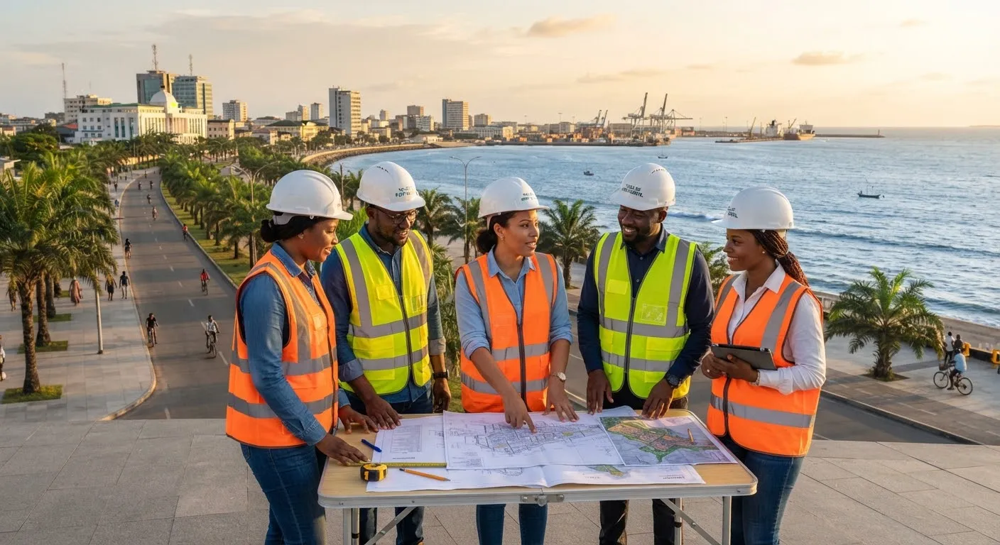
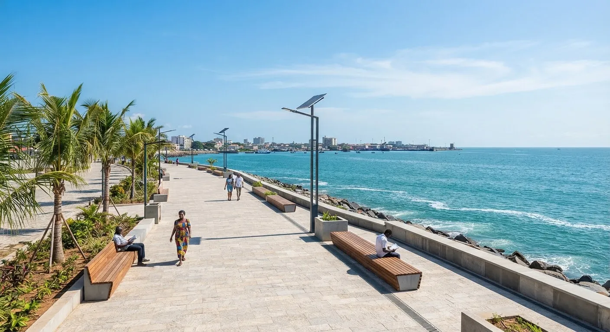
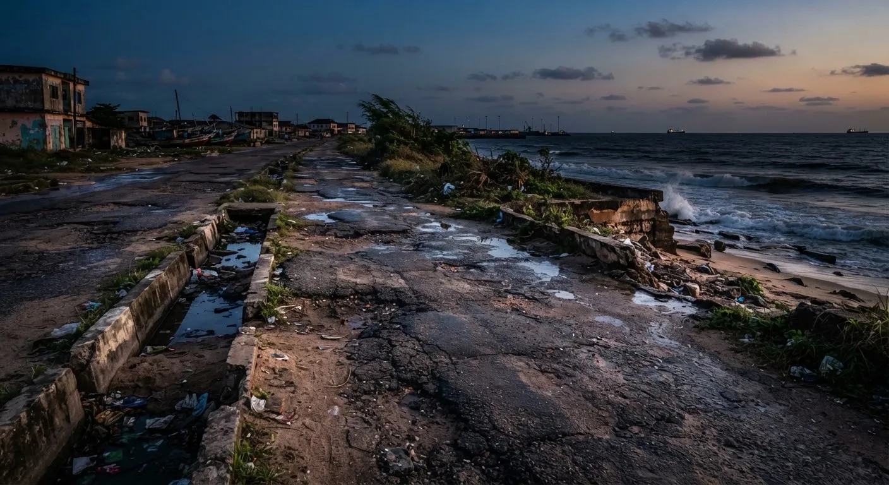
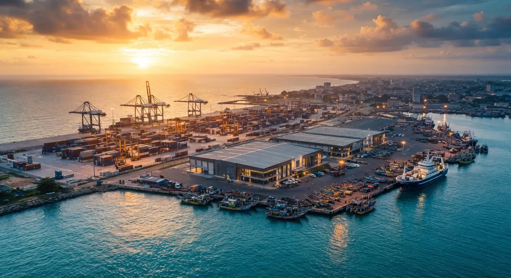
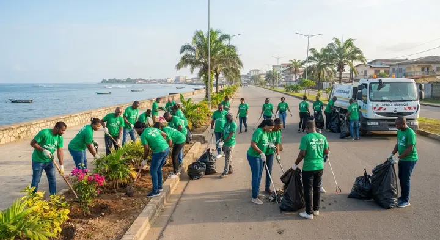
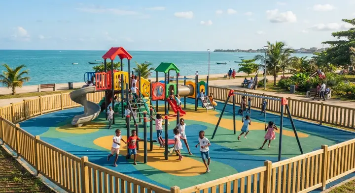
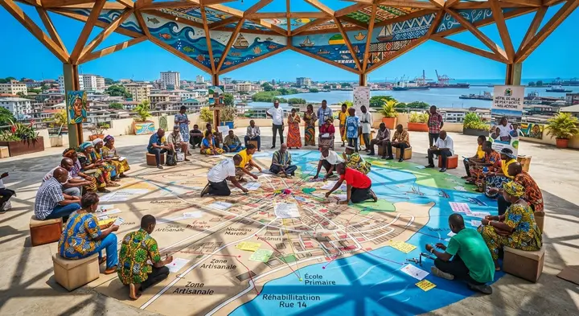

Bitumage et caniveaux — carrefour Tobia vers Grand Village
2e arr. · Circulation alternée jusqu'au 30 novembre

Voirie, éclairage, assainissement, équipements : suivez, quartier par quartier, la transformation de votre ville.
2e arr. · Circulation alternée jusqu'au 30 novembre
Tous secteurs · 290 déjà installés
2e arr. · Avant la saison des pluies
Livré en septembre 2026


AvantAprèsGlissez pour comparer : le front de mer avant et après réaménagement.

Un débarcadère moderne, une halle à marée, une chaîne du froid et des ateliers de transformation pour structurer la filière pêche artisanale et créer des emplois locaux.
Chaque projet affiche son budget et son avancement publiquement.
Un effort massif contre l'érosion et les inondations.
Un comité d'habitants examine l'exécution du budget.
Montants fictifs — à remplacer par le budget voté
Voirie, éclairage, déchets : photo et position GPS en deux minutes.
SignalerDéposez votre idée pour le prochain budget participatif.
Déposer une idéeRejoignez les journées citoyennes et les événements de la ville.
Rejoindre
Solidarité, jeunesse & culture
500 bourses « Métiers de la mer »
Formation aux métiers maritimes et portuaires pour les jeunes de l'île.
Festival des arts côtiers

Opération « Ville propre »

Aires de jeux de quartier

Caravane municipale de santé